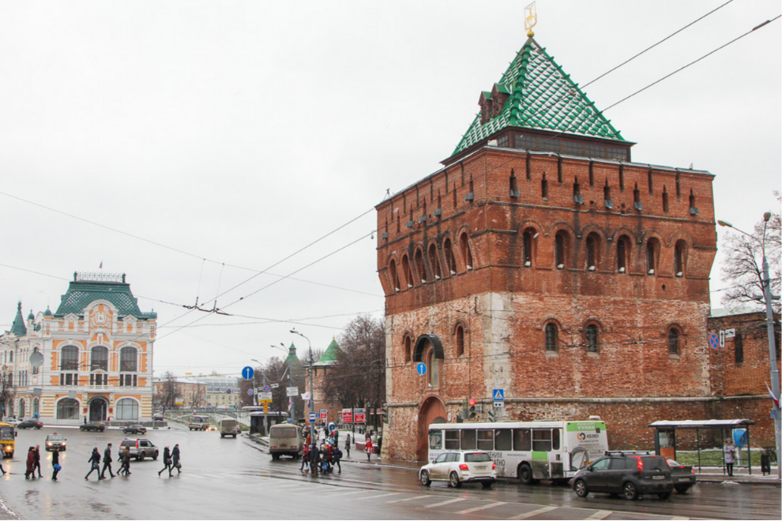
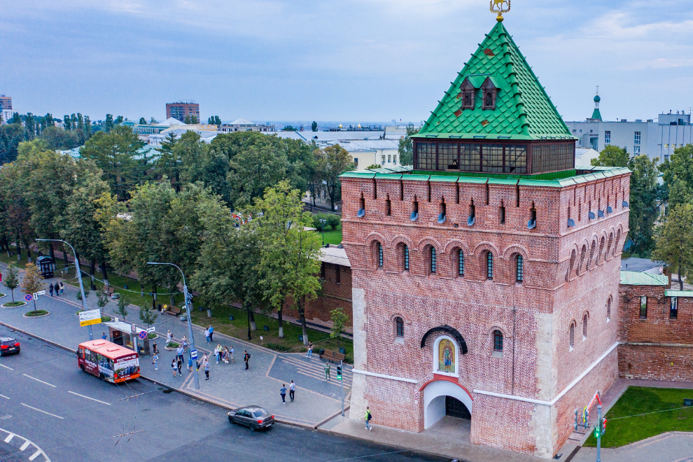

Нижегородский кремль — величественная средневековая крепость, одна из лучших в России по степени сохранности. Входит в число наиболее ценных архитектурных памятников России. Нижегородский кремль второй по размеру после Московского.
Нижегородский кремль
Cимволы 800


7 мая, 13:45
29419
Реставрация здания к 800-летию Нижнего Новгорода


Нижегородский кремль не похож ни на один из кремлей России. Поставленный на крутом откосе, он имеет рекордный перепад высот между верхней и нижней точками — 82 м. Возведенный в начале XVI века на месте старого, обветшалого деревянного кремля, он с самого начала был рассчитан на применение артиллерии. Башни выступают вперед за линию стен — этот строительный прием помогает укрыть защитников крепости от вражеского огня. При этом сами они получают возможность обстреливать нападающих, даже когда те подошли вплотную.
Это чудо инженерной и архитектурной мысли — плод совместной работы итальянских архитекторов, присланных Иваном III из Москвы, и русских каменщиков. Стройка велась ударными темпами – огромное сооружение возвели всего за 15 лет. На это время все окрестные деревни были обложены специальным «яичным» налогом: огромное количество свежих яиц требовалось для того, чтобы замешивать на них строительный раствор, обеспечивающий особую крепость кладки.
Работа была выполнена на славу — ни во время казанских войн, ни в годы Смуты Нижегородский кремль ни разу не был взят врагом. Но Нижний Новгород едва не лишился своего главного украшения в мирные годы.
К XVIII веку он уже полностью утратил свое стратегическое значение и начал ветшать. Екатерина Великая во время посещения Нижнего Новгорода приказала кремль снести, чтобы не закрывал вид на реку и не мешал проезду. По счастью, ее распоряжение из-за нерадивости исполнителей так и не было претворено в жизнь. В XX веке кремль, давно не видевший реставрации, находился в плачевном состоянии из-за береговых оползней и вандализма местных жителей. В 30-е годы было выдвинуто предложение снести часть кремлевских стен, а сам кремль провозгласили «памятников кровавого феодализма». На его месте предполагалось устроить сквер им. Свердлова. Но культурная общественность города активно протестовала против сноса кремля, а потом Великая Отечественная война сделала неактуальными все планы городского переустройства. В 50-х годах 20 века начались масштабные реставрационные работы под руководством архитектора Святослава Агафонова. Они продлились три десятка лет, и сегодня Нижегородский кремль снова по праву может считаться главным украшением города.
Реконструкция Кремля стала одним из самых масштабных проектов 800-летия Нижнего Новгорода. Древняя крепость стала более открытой и интересной для посетителей всех возрастов.
Открытию Кремля предшествовала огромная работа по восстановлению его стен и укреплению склонов с помощью 3290 свай. На аварийных участках использовались самые большие сваи глубиной до 25 метров и диаметром 670 миллиметров.
В стенах древней крепости появился круговой маршрут (так называемый боевой ход) общей протяжённостью более 2 километров и с перепадом высот почти с 30-этажный дом. Это самый длинный подобный маршрут в России. Кремль в Нижнем — единственный в стране, где можно полностью обойти все стены и башни.
На территории Кремля появились новые точки притяжения: Манеж, смотровая площадка на воссозданной колокольне Спасо-Преображенского собора и, конечно, боевой ход по стенам Кремля.
В трёх башнях Нижегородского кремля — Никольской, Зачатьевской и Ивановской — открылись музейные экспозиции. Для создания трёх выставок было использовано около 2 000 предметов музейного хранения.
Как смотровые площадки открыты четыре башни Кремля: Тайницкая, Часовая, Борисоглебская, Георгиевская. Отсюда посетители смогут полюбоваться городом и сделать запоминающиеся фото, а также разглядеть детали через бинокли.
Нижегородский кремль стал более комфортным для семей с детьми. На территории крепости появилась большая детская площадка, установлены скамейки и качели, приведены в порядок зелёные насаждения.
Исторический облик вернули Ивановскому съезду — первой улице города. Ещё недавно здесь была обычная парковка. По правой стороне съезда вновь виднеются стены храма Симеона Столпника. Когда-то он был одним из главных соборов мужского Симеоновского монастыря, но в советские годы был утрачен.
Продолжаются работы по воссозданию исторического фуникулёра. Элеватор функционировал между Северной и Часовой башнями в конце XIX — начале XX века.

{kind=link}
{kind=link}
{kind=link}